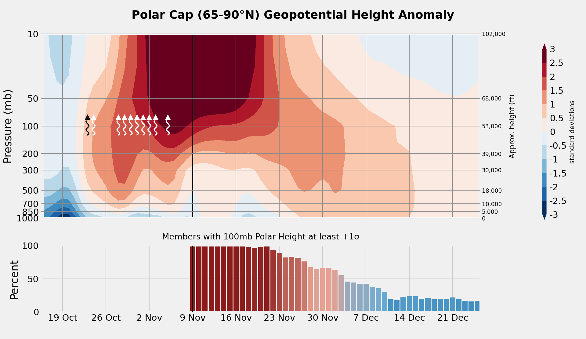

Weather Programmer / polar vortex
Standardized geopotential-height anomaly over the polar cap (65-90°N), from the surface to 10 mb. Red is a high polar cap (weak vortex). The bars are the share of extended-range members that forecast downwelling into the lower stratosphere.
Loading latest init…

Left of the vertical line is ERA5 analysis. Right is the ensemble-mean forecast. Climate is NCEP/NCAR Reanalysis 1, 1991-2020.
A sudden stratospheric warming shows up here as a deep red column in the upper stratosphere. Whether it matters for surface weather depends on whether that anomaly descends.
The top panel is the ensemble-mean standardized anomaly. The bottom panel is the member-by-member probability of clearing that +1σ threshold at 100 mb. High bars with little red below ~300 mb mean the ensemble still has a high polar cap aloft that has not yet coupled strongly into the troposphere.
ECMWF Extended anomalies are drift-corrected using about 100 IFS control reforecasts (5 nearby model dates × 20 hindcast years). GEFS Extended is shown without drift correction for now.
Upward arrows at 100 mb mark days when the 45-75°N eddy heat flux (a proxy for upward wave activity into the stratosphere) exceeds its day-of-year 90th percentile.
ERA5 can lag the open forecast archives by a day or two. Missing analysis days are bridged with that day’s lead-0 ensemble mean.